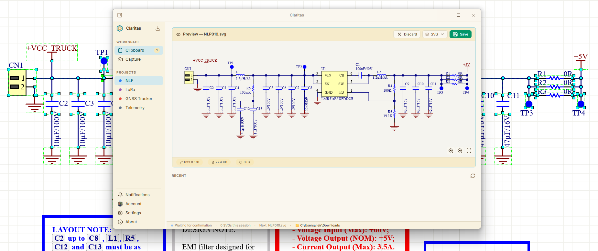
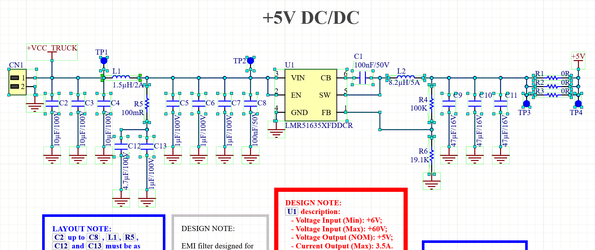
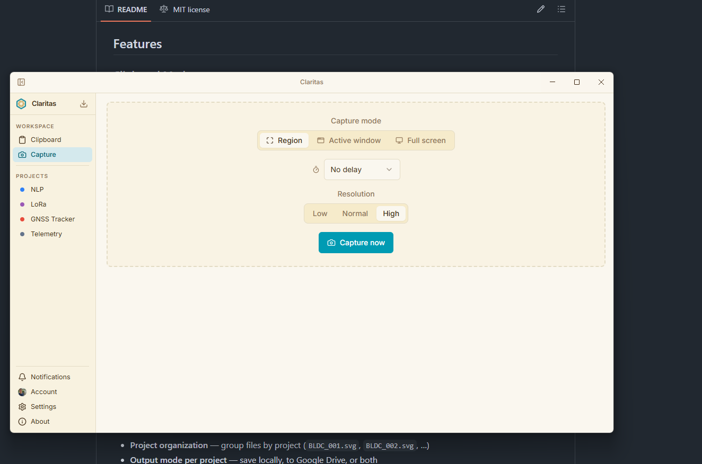
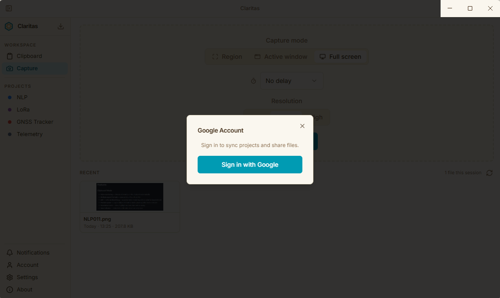

Claritas monitora o clipboard do Altium Designer, converte esquemáticos para SVG instantaneamente e os organiza por projeto — sem configuração, sem cliques extras.
Captura, converte e organiza seus esquemáticos do Altium em segundos — sem configuração.

Copie do Altium, o Claritas faz o resto.

Capture qualquer janela ou região da tela.

Seus arquivos na nuvem, na sua própria conta.

Sem plano pago. Sem anúncios. Sem freemium.
O Claritas existe porque boas ferramentas não deveriam ter preço.
Se o Claritas te poupou tempo esta semana — uma hora, dez minutos, qualquer coisa — um resistorzinho ajuda a manter o domínio, as atualizações e o projeto vivo.
Pague-me um resistor ΩUma vez já ajuda. Todo mês faz diferença. Você decide.